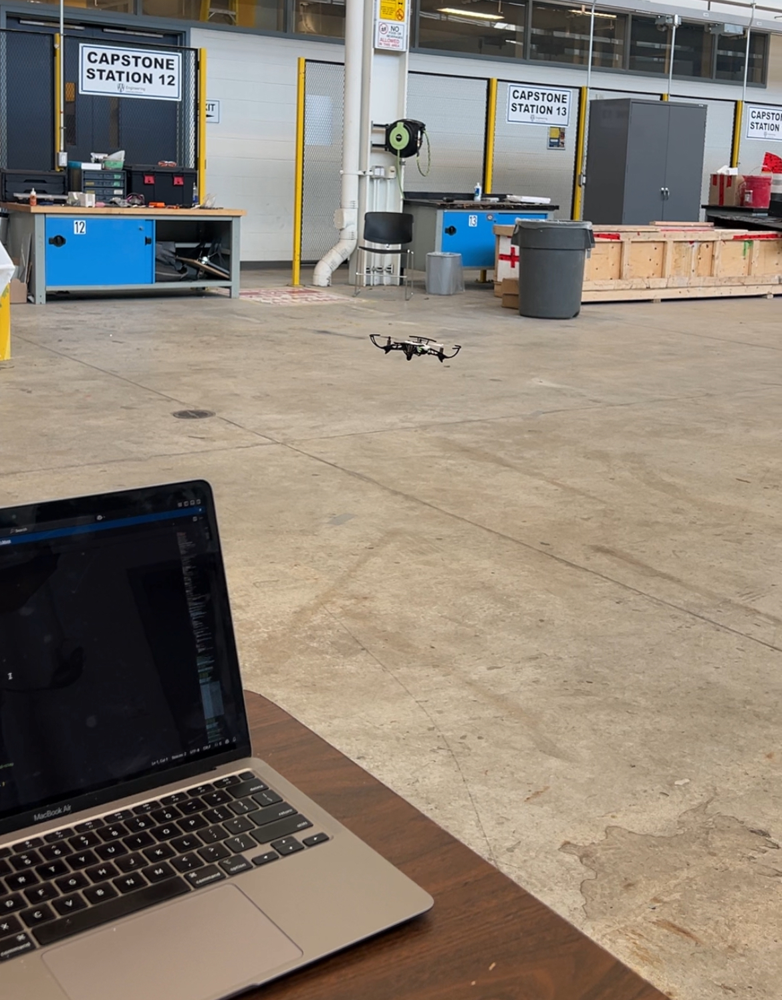

About Me
Welcome to my portfolio. I am passionate about solving complex and foundation engineering problems. Here you can find my latest projects.
Projects
Tello CV Drone Navigation
Developed a real-time control system for a Tello drone using Python and OpenCV. Features include Point-and-Click navigation and autonomous ArUco marker tracking.
Autonomous Drone Navigation & Control
University of Windsor | Internship 2025

This project focused on the development of autonomous flight systems by modeling drone dynamics and control algorithms. I explored the physics of flight—specifically thrust, lift, and torque—to maintain stability in 3D space.
Technical Details:
- Control Logic: Implemented PID-based stabilization using Simulink to calculate motor commands from sensor feedback.
- System Architecture: Structured the system blocks to process data from IMUs, cameras, and ultrasound sensors.
- Hardware Stack: Integrated the Pixhawk 2.4.8 Flight Controller with DJI F450 frames and 1000KV electric motors.
- Development: Used MATLAB scripts for parameter tuning and visualization, while generating embedded code for flight simulation.
Future Goals: Applying this control architecture to coordinate autonomous swarm flights with Crazyflie hardware.
Contact & Links
- Email: mugishas@uwindsor.ca
- LinkedIn: www.linkedin.com/in/samuel-mugisha-947a55364
- GitHub: www.linkedin.com/in/samuel-mugisha-947a55364